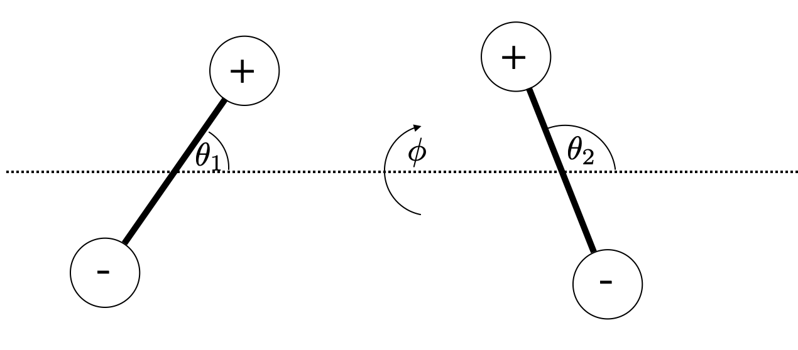
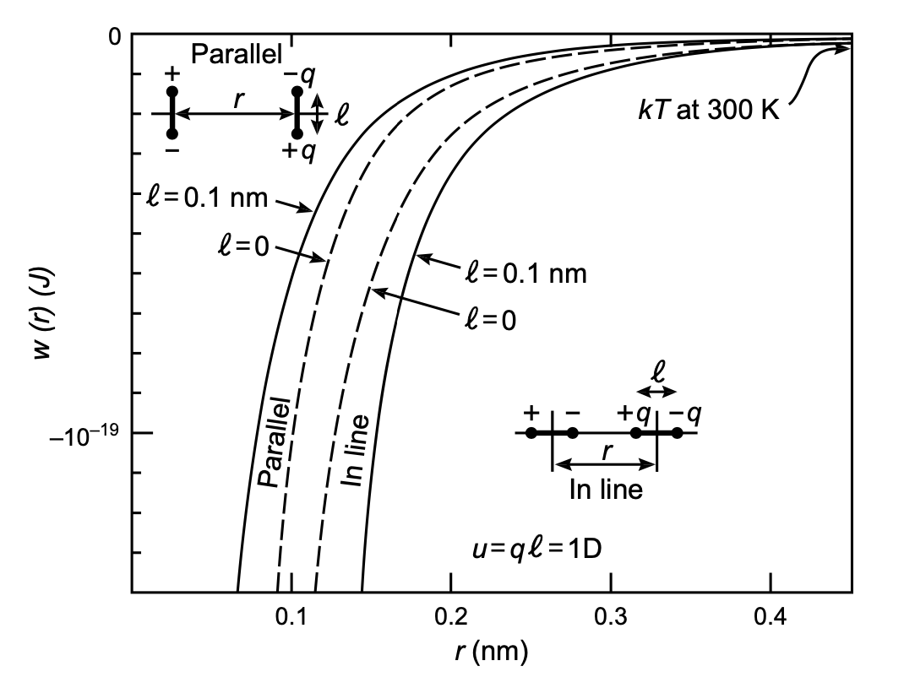

Dipole-Dipole Interactions
Contents
This page was generated from notebooks/L8/1_Forces_and_Interactions.ipynb.

Dipole-Dipole Interactions#
The interaction of two dipole will depend on three angles, the two angles of the dipoles with the connecting axis \(\theta_1, \theta_2\) and the angle \(\phi\) between the two planes which contain the individual dipoles and the axis. The figure below shows the corresponding geometry.
The energy of the two dipoles at a distance \(r\) follows then wihtout a detailed calculation with
\begin{equation} w(r,\theta_2,\theta_2,\phi)=-\frac{u_1 u_2}{4\pi \epsilon_0 \epsilon r^3}\left [ 2\cos(\theta_1) \cos(\theta_2)-\sin(\theta_1)\sin(\theta_2)\cos(\phi)\right ] \end{equation}
The image below (taken from the book by Israelachvili) shows the dipole dipole interaction energy for the parallel and the in-line configuration as indicated. As shown, the in-line configutation with facing opposite charges is more favorable.
The energies that are typically found are also larger than the thermal energy at room temperature and thefore lead to ordering effects.
Rotating Dipoles, angle averaged Potential#
The equations we derived so far deliver the energy for a specific fixed orientation of dipoles for example. However, molecules with dipoles may rotate and undergo rotational Brownian motion driven by thermal energy. This rotational diffusion can be very fast and the rotational sampling creates an average interaction that may scale differently with the distance. To get an effective distance dependence in the interaction, we have to integrate the Boltzmann factor over the orientational degrees of freedoms, i.e.
\begin{equation} \exp\left ( \frac{w(r)}{k_B T} \right)=\frac{\int \exp\left (-\frac{w(r,\Omega)}{k_B T} d\Omega\right )}{\int d\Omega}=\left \langle \exp\left (-\frac{w(r,\Omega)}{k_B T} d\Omega\right ) \right \rangle \end{equation}
with
and